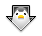

Firefox 35.0b4 【build1】： 英文版、简中版 英文版、简中版 英文版、简中版
Firefox 34.0.5 【build1】： 英文版、简中版 英文版、简中版 英文版、简中版
Firefox 31.3.0esr 【build2】： 英文版、简中版 英文版、简中版 英文版、简中版
Firefox Aurora ： 英文版、简中版 英文版、简中版 英文版、简中版
Firefox Nightly ： 英文版、简中版 英文版、简中版 英文版、简中版